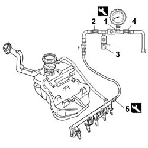

0510C10 FUEL SYSTEM - Check DELIVERY PRESSURE
- Path
- Procedures > 05 DIAGNOSTICS > 0510 VARIOUS CHECKS > 0510C SYSTEM CHECKS > 0510C10 FUEL SYSTEM - Check DELIVERY PRESSURE
- Kind
- repair procedure (removal / refitting; the operation number is the code)
- Applies to
- engines: 2.0 TB, 2.4 20V, 3.0 V6, 3.2 V6; all production periods
- Interactive page
- https://sloeber94.github.io/elrnDB-lThss/en/#/74508
Applies to: engines: 2.0 TB, 2.4 20V, 3.0 V6, 3.2 V6; all production periods
- Disconnect the electrical connections from the injectors.
 | Description | Connector |
|---|---|---|
. | Injector | N070A |
| Description | Connector |
|---|---|---|
Injector | N070B |
| Description | Connector |
|---|---|---|
Injector | N070C |
| Description | Connector |
|---|---|---|
Injector | N070D |
| Description | Connector |
|---|---|---|
Injector | N070E |
Applies to: engines: 3.0 V6, 3.2 V6; all production periods
| Description | Connector |
|---|---|---|
Injector | N070F |
Applies to: engines: 2.0 TB, 2.4 20V, 3.0 V6, 3.2 V6; all production periods
1. Prepare the test equipment as described in points 2, 3 and 4 below.
 | Description | Code | Function |
|---|---|---|---|
. | Pressure gauge | 1.860.955.000 | Fuel supply pressure check |
2. Open the tap.
3. Close the tap.
4. Close the tap.
5. Position the test equipment and connect it to the fuel manifold bleed valve using the specific connector.
| Description | Code | Function |
|---|---|---|---|
. | Rapid attachment connector | 1.870.684.000 | Single fuel manifold pipe complete with injectors |

Applies to: engines: 3.0 V6, 3.2 V6; all production periods
- Reconnect the electrical connections to the injectors.
| Description | Connector |
|---|---|---|
. | Injector | N070A |
| Description | Connector |
|---|---|---|
2 | Injector | N070B |
| Description | Connector |
|---|---|---|
2 | Injector | N070C |
| Description | Connector |
|---|---|---|
2 | Injector | N070D |
| Description | Connector |
|---|---|---|
2 | Injector | N070E |
Applies to: engines: 2.0 TB, 2.4 20V, 3.0 V6, 3.2 V6; all production periods
| Description | Connector |
|---|---|---|
. | Injector | N070F |
Applies to: engines: 2.0 TB, 2.4 20V, 3.0 V6, 3.2 V6; all production periods
- Start up the engine and check that the pressure reading on the gauge during idling corresponds to the recommended figures.
 | Subject | Value |
|---|---|---|
. | Submerged supply pump | bar |
- | Supply pressure check | 3,5 |
- Switch off the engine.
- Operate the fuel pump through the "Active Diagnosis" function of the diagnostic equipment and check that the pressure does not exceed 4 bar.
- Disconnect the test equipment and the specific connector from the fuel manifold bleed valve.
| Description | Code | Function |
|---|---|---|---|
. | Rapid attachment connector | 1.870.684.000 | Single fuel manifold pipe complete with injectors |
| Description | Code | Function |
|---|---|---|---|
. | Pressure gauge | 1.860.955.000 | Fuel supply pressure check |
Topics that link to this page (10)
- B10 ENGINE DOES NOT START IN ANY CONDITIONS
- B13 ENGINE STARTS WITH DIFFICULTY
- B20 ENGINE STARTS AND CUTS OUT STRAIGHT AWAY
- D01 ENGINE NOT RUNNING SMOOTHLY (HESITATION)
- D02 ENGINE NOT RUNNING SMOOTHLY (NOT FIRING PROPERLY)
- D03 ENGINE NOT RUNNING SMOOTHLY - JUDDERING
- D05 ENGINE DOES NOT ACHIEVE MAXIMUM PERFORMANCE
- D10 ENGINE IDLE IRREGULAR
- D21 THE ENGINE CUTS OUT WHILST DRIVING
- X01 EXCESSIVE FUEL CONSUMPTION